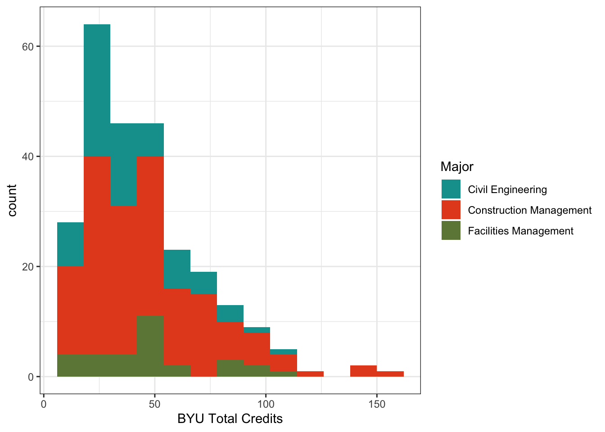
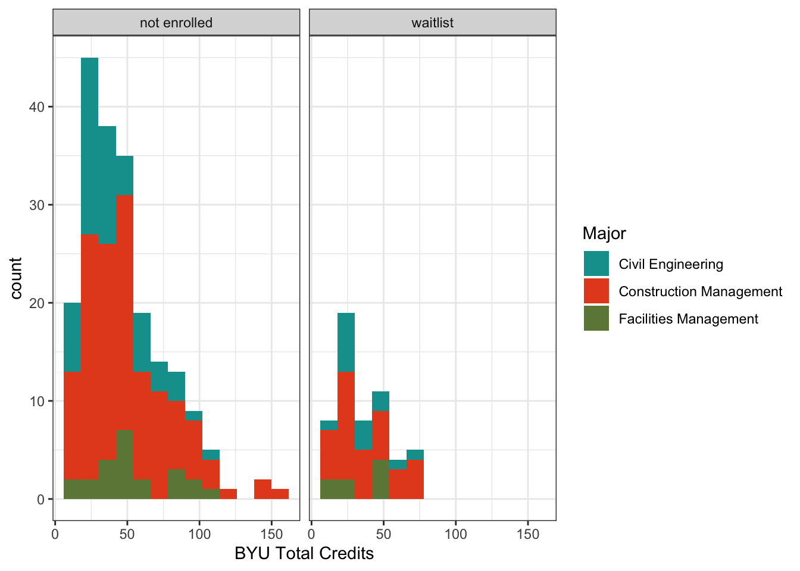

backlog <- read_xlsx(file.path(folder, "selected_unenrolled.xlsx")) |>
mutate(
# simplify major categories
major = clean_major(Major),
# mark new students
new = ifelse(`BYU Total Credits` < 12, TRUE, FALSE),
)Background
Beginning with the 2024-2025 academic year, CCE 102 replaces a two different 200-level classes. This creates a logjam where two years of students need to be enrolled at the same time. CFM, CE, and FM graduate together about 150 students per year, meaning that sets the long-run capacity for the class. Our plan is to offer four sections of 60 students per year, with a total capacity of 240 students. This should provide ample space for students who take the class and then switch majors, as well as provide a context for students in other majors who take the class as a GE or a minor elective.
During the 2024-2025 academic year, we offered six sections of CCE 102 — in addition to a Spring study abroad section — with a total capacity of 380 students. This should have been sufficient to clear the backlog of students for two class years. However, the waitlist for the 2025-2026 academic year remains large.
This post serves as an analysis of the waitlist for Fall 2025, with an eye to understanding who is yet to enroll in the course.
An estimate of the backlog
I asked Emily Platt to run a report with the university registrar, returning a list of students who are declared CE, CFM, or FM majors but who have not yet completed CCE 102 or its predecessor course CCE 201.
The total number of students who are in the majors but who have not yet enrolled is 442. Table 1 shows the number of students who have not yet enrolled in CCE 102 by major. About 1/3 of the backlog (185 students) are recently enrolled students, meaning that they have completed fewer than 12 BYU credit hours. These students could be new to BYU as freshmen, or they could have transferred from another school.
backlog |>
group_by(major, new) |>
summarise(n = n()) |>
pivot_wider(names_from = new, values_from = n, values_fill = 0) |>
kbl(col.names = c("Major", "More than 12 credit hours", "Less than 12 credit hours")) |>
kable_styling()`summarise()` has grouped output by 'major'. You can override using the
`.groups` argument.| Major | More than 12 credit hours | Less than 12 credit hours |
|---|---|---|
| Civil Engineering | 69 | 99 |
| Construction Management | 157 | 81 |
| Facilities Management | 31 | 5 |
Figure 1 shows the distribution of students who have not yet enrolled in CCE 102 by number of credits, excluding students with fewer than 12 credit hours. The most common number of hours is less than 50, but there are some older students particularly in CM.
ggplot(backlog |> filter(!new), aes(x = `BYU Total Credits`, fill = major)) +
geom_histogram(binwidth = 12) + scale_fill_manual("Major", values = pal[c(1, 3, 4)])

Current enrollment trends
Of course, the question remains about how many of these students are currently registered for the course. I obtained the waitlist and enrollment information for my own classes, and asked Darrell Sonntag to send me his.
First off, let’s get a list of unique students, because some students may be waitlisted for one section while enrolled in another. Looks like there are 5 students who are on the waitlist for Macfarlane who are enrolled in Sonntag’s class.
# list of students who appear more than once
double_e <- enrollment |> group_by(id) |> mutate(n = row_number()) |> filter(n > 1) |> pull(id)
enrollment |> filter(id %in% double_e) |> arrange(id)# A tibble: 10 × 5
id major instructor status class
<chr> <chr> <chr> <chr> <fct>
1 399364522 Facilities Management Macfarlane waitlist Freshman
2 399364522 Facilities Management Sonntag enrolled Freshman
3 453239414 Construction Management Macfarlane waitlist Freshman
4 453239414 Construction Management Sonntag enrolled Freshman
5 552684248 Civil Engineering Macfarlane waitlist Freshman
6 552684248 Civil Engineering Sonntag enrolled Freshman
7 615723047 Construction Management Macfarlane waitlist Sophomore
8 615723047 Construction Management Sonntag enrolled Sophomore
9 721262265 Civil Engineering Macfarlane waitlist Sophomore
10 721262265 Civil Engineering Sonntag enrolled Sophomoreunique <- enrollment |> group_by(id) |> summarise(n = n()) |> filter(n == 1) |> pull(id)
u_enrollment <- enrollment |> filter(id %in% unique)
u_enrollment |> group_by(major, class, status) |>
summarise(n = n()) |>
pivot_wider(names_from = major, values_from = n, values_fill = 0) |>
arrange(status, class) |>
select(-status) |>
kbl(col.names = c("Class", "CE", "CM", "FM", "Other", "Other Engineering")) |>
kable_styling() |>
group_rows("Enrolled", 1, 4) |>
group_rows("Waitlisted", 5, 8)`summarise()` has grouped output by 'major', 'class'. You can override using
the `.groups` argument.| Class | CE | CM | FM | Other | Other Engineering |
|---|---|---|---|---|---|
| Enrolled | |||||
| Senior | 6 | 12 | 0 | 1 | 0 |
| Junior | 12 | 22 | 5 | 7 | 1 |
| Sophomore | 14 | 15 | 1 | 5 | 0 |
| Freshman | 8 | 0 | 1 | 5 | 0 |
| Waitlisted | |||||
| Senior | 0 | 1 | 0 | 2 | 1 |
| Junior | 1 | 2 | 0 | 8 | 2 |
| Sophomore | 9 | 13 | 4 | 11 | 2 |
| Freshman | 4 | 4 | 3 | 18 | 1 |
This means that there are currently 201 unique students enrolled and waitlisted in CCE 102, with both sections at the capacity of 60 students each.
Overlap with Backlog
It remains to be seen how many of the students on the enrollment list are also on the backlog.
remaining_backlog <- backlog |>
left_join(u_enrollment |> select(id, status), by = c(`BYU ID` = "id")) |>
mutate(status = ifelse(is.na(status), "not enrolled", status))
remaining_backlog |>
group_by(major, status) |>
summarise(n = n()) |>
pivot_wider(names_from = status, values_from = n, values_fill = 0) |>
kbl(col.names = c("Major", "Not Enrolled", "Waitlisted")) |>
kable_styling()`summarise()` has grouped output by 'major'. You can override using the
`.groups` argument.| Major | Not Enrolled | Waitlisted |
|---|---|---|
| Civil Engineering | 136 | 32 |
| Construction Management | 204 | 34 |
| Facilities Management | 28 | 8 |
Ugh. It seems like only students who are not enrolled in CCE 102 are on the backlog. Let’s look again at our distribution of credit hours by backlog status, which I show in Figure 2. I can’t show the hour distribution for the enrolled students, because the information on number of credit hours came from Emily Platt’s report and not the enrollment data.
ggplot(remaining_backlog |> filter(!new), aes(x = `BYU Total Credits`, fill = major)) +
geom_histogram(binwidth = 12) + scale_fill_manual("Major", values = pal[c(1, 3, 4)]) +
facet_wrap(~ status)

Recommendation
This is the first time we have ever run a report like this, so we don’t know if this is how all classes look, or if it just this one. Some of the students on the backlog may be waiting to declare a different major or withdraw from the university, and therefore show up on report but are not actively engaged with the major. It is confusing to me that so few of the incoming new students are enrolled or waitlisted, and also that there are so many students on the backlog including those who have to have been here for years.
My recommendation is that we modestly increase the capacity of the class for Fall 2025. I can accommodate 72 students in my section, because I can increase the size of each team. I cannot increase the number of teams, because all teams have to make a presentation in class.
If the overenrollment continues in Winter 2025, we may have to add an additional section. But the added capacity from 2024-2025 should have been sufficient to clear the backlog of students who are actively engaged in the major.